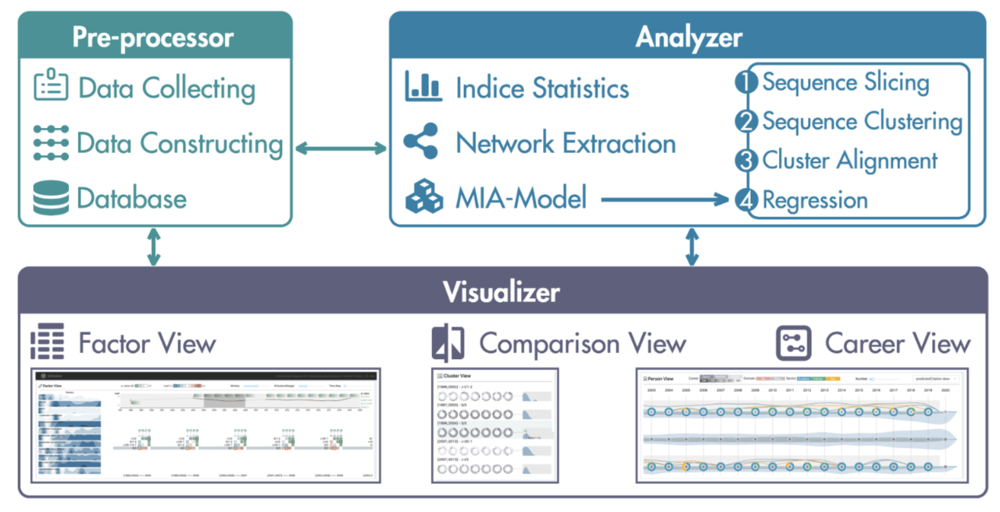
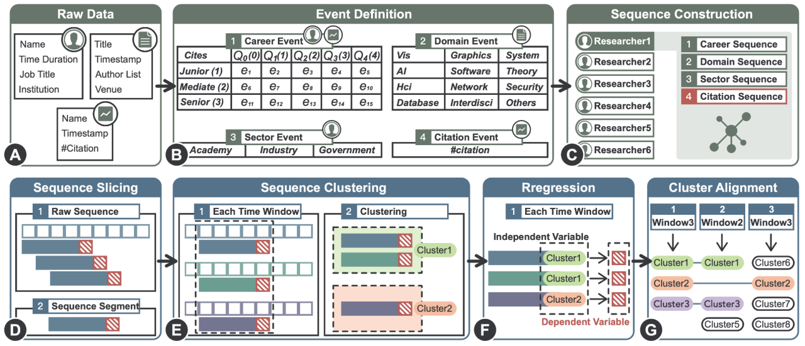
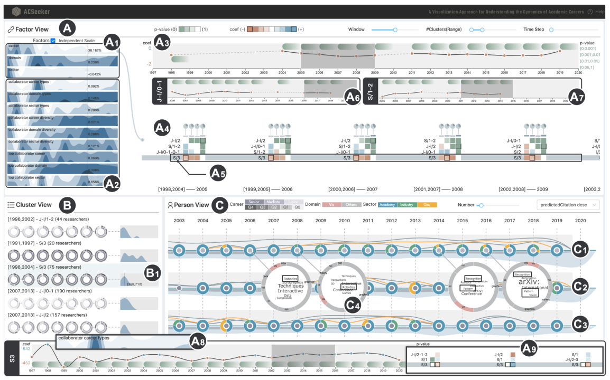

文章：Seek for Success: A Visualization Approach for Understanding the Dynamics of Academic Careers
期刊/会议：IEEE VIS
年份：2021
作者：Yifang Wang, Tai-Quan Peng, Huihua Lu, Haoren Wang, Xiao Xie, Huamin Qu, and Yingcai Wu
简介：如何取得学术生涯的成功一直是社会科学研究中长期存在的研究课题。随着学术档案、职业轨迹数据规模的日益增大，学术界重燃对职业成功的兴趣，该领域称为Sci-Sci。本文采用全新的动态视角，研究个人和社会因素对职业成功的影响。本文提出ACSeeker，一种交互式的视觉分析方法，以探索成功的潜在因素以及多种因素的影响在学术生涯的不同阶段如何变化。
链接：http://arxiv.org/abs/2108.03381。
作者简介
本篇文章一作为港科大访问学者Yifang Wang，研究方向是沉浸式可视分析
个人主页：http://wangyifang.top/about/
一篇类似工作：Interactive Visual Exploration of Longitudinal Historical Career Mobility Data
二作Tai-Quan Peng为密歇根州立大学社会学教授
Huihua Lu, Haoren Wang, Xiao Xie来自巫英才老师组
Qu Huamin为香港科技大学教授
Wu Yingcai为浙江大学教授
Introduction
背景
Science-of-Science研究兴起，学术档案数据激增，学者对学术生涯的成功有一定追求，希望能够分析出各因素对学术生涯成功的影响，并指导实践。
挑战
- 影响学术生涯成功的因素复杂
- 呈现多因素不同时期影响困难
- 支持对多因素影响的探索不易
本文贡献
- 描述一个新领域：不同时间段多因素对学术生涯的影响可视分析
- 提出一个新框架：纵向分析了多因素对研究人员职业的影响
- 开发一个新系统：ACSeeker，交互式可视分析系统
本文通过涵盖1100+名可视化研究人员的数据集证明了ACSeeker的有效性和易用性。
相关工作
职业生涯数据分析及可视化
- 一些社会科学研究
- 宏观角度，分析不同职业的流入流出
- 未能分析历史事件对未来职业表现的影响
- 数据挖掘工作
- 微观角度，比较个人职业，预测未来工作
- 缺乏宏观总结，而社会科学中通常需要了解人的总体行为模式
序列数据的挖掘及可视化
- 模式识别、序列推理、序列建模
- 阶段分析
- 本文方法
- 关注多因素的影响
- 考虑不同绝对时间，不同历史背景下研究人员的表现
背景
概念
- 生涯表现（本文使用引用量衡量学者的学术表现）
- 生涯影响因素
- 内因
- 职位、等级、工作单位（学术界、工业界、政府机构）
- 外因
- 合作者
- 内因
- 学者组别
- 在特定影响因素上表现相近的学者，分到一个组别
数据
- 对象
- VIS社区的研究人员
- 职业生涯数据
- 来自LinkedIn
- 论文数据
- 21600+论文及元数据，来自Aminer
- 引用数据
- 从谷歌学术爬取
任务分析
- 因素间
- 特定因素对职业成功的影响随时间的变化
- 不同因素在特定时间的影响
- 因素内
- 通过因素确定的组在不同时期的变化
- 同一个因素如何影响不同的组
- 个体
- 个体研究者的研究生涯如何变化
- 个体研究者影响因素随时间的变化
系统概览

- Pre-processor
- 数据采集、构建数据库等
- Analyzer
- 统计分析、序列切分、序列聚类等
- Visualizer
- 因子视图（探究影响因素）
- 比较视图（探究学者组别，对比分析）
- 职业视图（探究个人的学术发展路径）
数据分析

- 数据预处理
- 根据原始数据构建各类序列数据
- 传统的序列历史分析（SHA）
- 识别历史序列中的特征，计算距离矩阵，聚类
- 用回归模型预测历史序列中的模式如何影响未来的事件
- 多因素影响分析（MIA）（本文方法）
- 序列切分
- 按照时间窗口切分，获取序列片段
- 序列聚类
- 使用k-Means方法，效率高，效果好
- 多元线性回归
- Independent variable
- 三类时间序列的聚类结果（职业、领域、工作单位）
- 滑动窗口中发表论文最多的合作者
- 每个序列集合中的合作者数量
- 滑动窗口中每一类时间序列的个数
- Dependent variable
- 时间窗口的下一年，论文的引用量
- Independent variable
- 序列切分
可视设计及案例研究

原作者在本视频中详细介绍了可视设计及案例研究：
https://www.youtube.com/watch?v=S-_JopzBY6g
专家访谈
- 工作流
- 有统计学背景的会关注矩阵和统计结果
- 普通研究者通过矩阵选择群组，分析特定人员档案
- VIS研究者更倾向于过滤与VIS相关的信息
- 动态多因素影响分析
- 序列切片和序列聚类，辅助动态分析
- 可视化和交互
讨论
- 重要性
- VIS研究者更倾向于过滤与VIS相关的信息
- 经验教训
- 社会学x可视化，将传统静态分析转化为动态分析
- 不同领域的研究者关注重点不同
- 限制
- 数据集仅来自VIS研究人员
- 滑动窗口尺寸固定，分析因素的长短期影响有一定困难
- 扩展性
- 能够支持其它领域序列数据，多因素影响的动态分析
总结
- 支持三个层面的分析
- 因素内、因素间、个人
- 两种新的可视设计
- 影响时间线和职业线
- 未来计划
- 加强MIA框架，加入滑动窗口长度的调节
- 向普通研究人员收集需求，提高ACSeeker的普适性
✉️ zjuvis@cad.zju.edu.cn